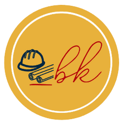

<mat-toolbar color="primary" class="app-header">
  
  <span class="navItems">
    <a mat-button routerLink="login" routerLinkActive="active">Log in</a>
    <a mat-button mat-raised-button routerLink="register" routerLinkActive="active">Register</a>
  </span>
</mat-toolbar>
<router-outlet></router-outlet>